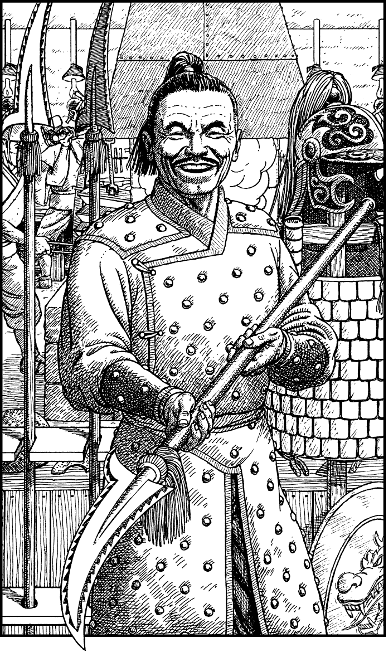

237
The Chai officer gives you a broad grin when you accept his offer. After bowing respectfully to the Khea-khan, he escorts you to the Imperial Palace Armoury located near to the main gate. Beyond a narrow foyer, you enter a wide, deep hall illuminated by hundreds of oil lamps. The smell of the burning oil mingles with the sweat of dozens of Chai armourers who are toiling at benches fixed along the ivory-white walls.
Captain Chan delights in showing you some of the exotic bladed weapons for which his homeland is famous. You are especially impressed by the Kirusami—the halberd-like polearms that are issued only to the Imperial Guardsmen like Chan. Its craftsmanship and balance are superb. (If you wish to keep one of these weapons, record it on your Weapons List as a Chai Spear. In combat it will add 1 to your COMBAT SKILL.)

Chan also shows you some Imperial Guard armour, and insists that you try on a waistcoat of golden mail. ‘It is called ang’sei, which means “Armour of Life”,’ he says, proudly. ‘It is as strong as steel yet as light and as supple as fine leather.’ (If you wish to keep this Ang’sei, record it on your Action Chart as a Special Item. When worn in combat, you may deduct 2 from your enemy’s COMBAT SKILL. You need not discard another item in its favour if you already possess the maximum number permissible.)
Chan also shows you the following Chai weapons and encourages you to take whatever you wish:
- Sword
- Broadsword
- Quiver
- Dagger
- Short Sword
- 6 Arrows
- Axe
- Warhammer
- Bow
- Mace
If you decide to take any of the above weapons, make the necessary adjustments to your Weapons List before you leave the armoury.
To continue, turn to 122.